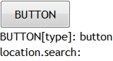

HF9015: IE6 IE7 IE8(Q) 中 BUTTON 元素的 type 属性默认值不是 submit
作者：陆远
标准参考
根据 HTML4.01 规范中的描述，BUTTON 元素创建一个类似 INPUT 元素类型为 button 的按钮控件，但 BUTTON 元素拥有更丰富的呈现效果，如可以在按钮上加入图片等等。
BUTTON 元素同样拥有 type 属性，其取值为 submit、button、reset，分别对应提交按钮、普通按钮、重置按钮。其中 submit 为 type 属性的缺省值。
关于 BUTTON 元素的更多信息，请参考 HTML4.01 规范 17.5 The BUTTON element 中的内容。
问题描述
在 IE6 IE7 IE8(Q) 中 BUTTON 元素 type 属性的默认值不是规范规定的 submit 而是 button，则默认没有设定 type 属性时的 BUTTON 元素将创建一个普通按钮，而不是提交按钮。
造成的影响
这会导致按钮的类型在不同浏览器之间出现差异，若按钮位于表单中，则在 IE8(S) 及其他非 IE 浏览器中，点击这种没有设定 type 属性的按钮会触发表单提交事件。
受影响的浏览器
| IE6 IE7 IE8(Q) |
|---|
问题分析
根据问题描述构建如下测试样例：button_type.html
<!DOCTYPE html>
<html>
<head>
<style>
* { margin:0; padding:0; font:16px 'Trebuchet MS'; }
button { width:100px; height:40px; }
</style>
</head>
<body>
<form>
<button id="btn" name="btn" value="BUTTON">BUTTON</button><br />
<script>
if (location.search == '') {
document.getElementById('btn').click();
}
document.write('BUTTON[type]: ' + document.getElementById('btn').type + '<br />');
document.write('location.search: ' + location.search + '<br />');
</script>
</form>
</body>
</html>
页面中一个默认的 FORM 元素中有一个没有设定 type 属性的 BUTTON 元素，触发 BUTTON 元素的 click 事件，并通过脚本获取 BUTTON 元素的 type 属性值及通过测试页面 location.search 属性值判断页面是否发生了跳转。
这段代码在各浏览器中运行效果为：
| IE6 IE7 IE8(Q) | IE8(S) Firefox Chrome Safari Opera |
|---|---|
|  |  |
- 在 IE6 IE7 IE8(Q) 中，BUTTON 元素 type 属性的缺省值为 button，不是规范中规定的 submit，这导致未设定 type 属性的 BUTTON 元素此时是一个普通按钮，默认不具备提交功能；
- 在 IE8(S) Firefox Chrome Safari Opera 中，BUTTON 元素 type 属性的缺省值为 submit，与规范描述相符，所以未设定 type 属性的 BUTTON 元素此时是一个提交按钮，点击该按钮会触发其所在表单的提交事件。
解决方案
在使用 BUTTON 元素时应明确的为其设定 type 属性，避免因为浏览器默认属性值不同导致按钮类型出现差异。
参见
知识库
相关问题
测试环境
| 操作系统版本: | Windows 7 Ultimate build 7600 |
|---|---|
| 浏览器版本: |
IE6 IE7 IE8 Firefox 3.6.10 Chrome 7.0.544.17 dev Safari 5.0.2 Opera 10.62 |
| 测试页面: | button_type.html |
| 本文更新时间: | 2010-09-26 |
关键字
BUTTON type submit